2007 · Principale · Nation
Nation · England
Flight 001
Nation è il terzo contest di GRA sugli stili grafici, questa volta su scala europea: sei voli, uno per nazione, in cui artisti italiani e artisti del paese ospite interpretano la stessa nazione. Il primo volo è l’Inghilterra, al Rialto Santambrogio, con gli ospiti C86, Jawa e Rudiger_the_illustrator.
Opere 18


La serata 11 foto

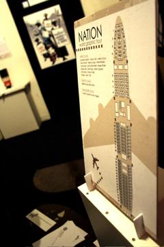

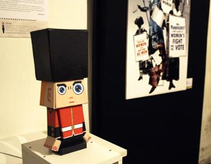

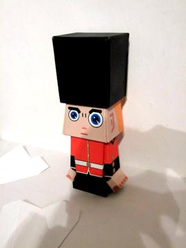

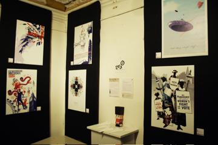

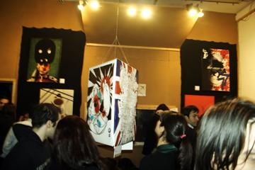

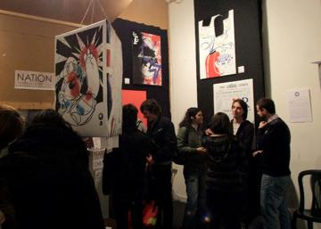

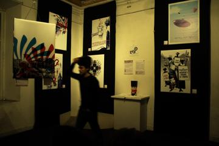

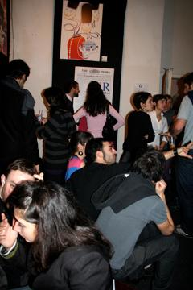

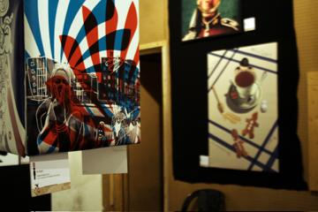

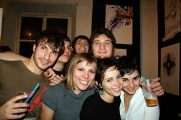

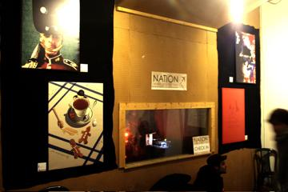
Artisti 17
Angelo RasileArtevettorialeC86Ciba Chrome*Ginevra Virgili · gin°JawaLady FlowersLiza Marie CalestiniMarco CaràMiriam Tognella · Disorder DesignRoberta Rizzi · RoRiRudiger_the_illustratorSaVe DesignStefano Longo · thisisstupiduLaValerio CiccoValerio Spinelli
GRA — Genuine Roman Art · RomaOpere © i rispettivi autori